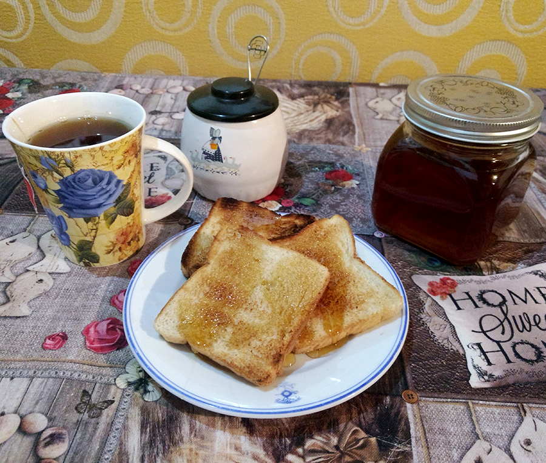

<!-- NOSOTROS -->
<div class="container" id="medio">
  <div class="row">
    <!-- Informacion sobre la empresa  -->
    <div class="jumbotron col-md-6 jumbotron-fluid">
      <h3>¿Qu&eacute; es Onee?</h3>
      
      <p>Onee es una mielera regional dedicada al procesamiento y comercializaci&oacute;n de miel de abeja 100% natural, de excelente calidad y con m&aacute;s de diez años en el mercado comprando dicho producto a productores regionales de Argentina.</p>
      <p>Una vez abastecido el producto, la miel es clasificada, filtrada, homogeneizada y envasada para su posterior venta al p&uacute;blico.</p>
      <p>Onee enfoca sus esfuerzos en ser una empresa l&iacute;der en el ramo a nivel nacional, fortaleciendo la cadena productiva de miel de abeja, por medio de apoyo a los diferentes eslabones de la misma, destacando el de producci&oacute;n y comercializaci&oacute;n a todo el pa&iacute;s.  Esto ha significado un gran reto, ya que los apicultores no se encontraban organizados, lo que tra&iacute;a como consecuencia que no existiera un registro de los mismos, y la carencia de suministros adecuados para la producci&oacute;n de miel, con la consecuente falta de financiamiento oportuno para sus actividades.</p>

    </div>
    <!-- Imagen acompañando la info. -->
    <div class="jumbotron col-md-6 jumbotron-fluid" id="jumbo2">
        
    </div>
  </div>
</div>


